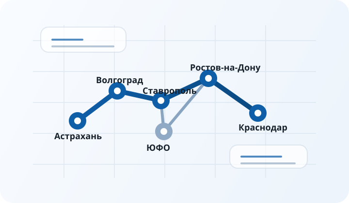

Ростов-на-Дону
Промышленность, агропром, коммунальная инфраструктура, логистические узлы, котельные и инженерные системы производственных площадок.
ПромАвтоматика Юг работает как инженерный субподрядчик по объектам в Ростове-на-Дону, Краснодаре, Ставрополе, Волгограде и Астрахани. Основной фокус компании сосредоточен на ЮФО, но технически короткие проекты возможны и в других регионах России.
Для B2B-заказчика география важна не только как формальная зона присутствия. В инженерном субподряде критичны скорость выезда, понимание особенностей локальной промышленности, реальная логистика инструмента и готовность работать на площадках с разным уровнем строительной готовности. Поэтому раздел по регионам нужен не как справочный список городов, а как отдельный SEO-кластер, который показывает, где именно компания может выполнять промышленную автоматизацию, электромонтаж промышленных объектов, монтаж КИПиА и пусконаладку сложных систем.
В каждом городе или регионе структура спроса немного отличается. Где-то чаще запрашивают автоматизацию котельных, где-то преобладают очистные сооружения, аграрная автоматизация, газораспределительные объекты, дата-центры или производственные линии. При этом модель работы остается одинаковой: компания подключается как субподрядчик к общему проекту и берет на себя технически сложный участок, требующий понимания силовой части, автоматики, телеметрии, инженерной безопасности и фактического запуска системы.

Для каждого направления подготовлена отдельная страница с описанием типовых отраслей, инженерных задач и внутренними ссылками на профильные услуги и объекты.
Промышленность, агропром, коммунальная инфраструктура, логистические узлы, котельные и инженерные системы производственных площадок.
Тепличные комплексы, пищевое производство, холодильная инфраструктура, инженерные системы складов и автоматика объектов АПК.
Газовая отрасль, водоснабжение, сельхозпереработка, распределенные объекты с развитым полевым контуром и диспетчеризацией.
Промышленные предприятия, насосные станции, очистные сооружения, распределение электроэнергии и автоматизация технологических линий.
Газовые и распределенные инженерные объекты, водоканал, коммунальная инфраструктура, насосное оборудование и полевые системы контроля.
На практике в ЮФО заказчики редко ищут подрядчика только на один узкий вид работ. Даже если в тендере формально заявлен только электромонтаж промышленных объектов, в реальности приходится учитывать шкафы управления, монтаж КИПиА, локальную автоматику, системы аварийной сигнализации, телеметрию и верхний уровень диспетчеризации. Именно поэтому наибольшую ценность компания дает там, где нужно соединить несколько инженерных подсистем в один устойчивый результат.
Чаще всего это объекты, связанные с инженерной инфраструктурой, технологическими площадками, блочно-модульными решениями, новыми производственными линиями, а также с коммунальными и аграрными системами. В зависимости от территории преобладают разные объекты, но методика работы остается стабильной: анализ документации, проверка пересечений разделов, подготовка трасс и оборудования, монтаж, наладка, запуск и оформление исполнительной части.
Чтобы оценить инженерный профиль компании, можно перейти на страницы промышленной автоматизации, электромонтажа промышленных объектов, монтажа КИПиА и пусконаладки.
Если ваш запрос сформулирован через тип объекта, используйте раздел типовых объектов: там отдельно раскрыты котельные, тепличные комплексы, очистные сооружения, дата-центры и газораспределительные объекты.
Отправьте комплект документов через контакты. Для первичной оценки достаточно адреса объекта, стадии проекта, краткого перечня работ и набора схем или чертежей.
Если проект уже привязан к конкретному городу или области, удобнее сразу перейти на локальную страницу и затем открыть связанные услуги и типовые объекты. Такой маршрут особенно полезен для технических специалистов и руководителей проектов, которым важно быстро понять, насколько подрядчик ориентируется в характерных задачах региона и способен выйти на площадку в понятные сроки.
После выбора региона имеет смысл сопоставить свой объект с разделом типовых объектов и профильными страницами услуг. Такой способ навигации усиливает внутреннюю перелинковку сайта и одновременно помогает заказчику быстро перейти от общей информации к конкретной задаче.